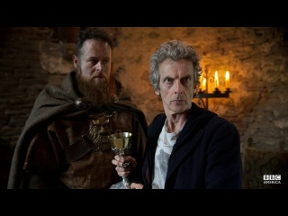
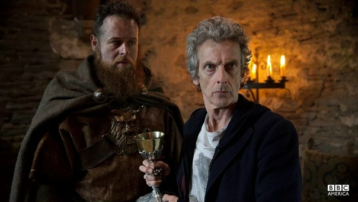

* MVO BaibaKo
* VO VinneyGreat

The Doctor's Meditation
приквел к 9 сезону
15 сентября 2015
Формат: 6-минутный эпизод
| Варианты озвучек: | * MVO TVShows * MVO BaibaKo * VO VinneyGreat |
|---|---|
| Скачивание и просмотр: |
Это одна из немногих историй «Доктора Кто», премьера которой произошла не на ТВ и не онлайн, а в кинотеатрах. Сюжет продолжает предыдущий приквел, названный «Прологом» (2015), где впервые оглашается, что Доктора разыскивает старый враг, и он решает помедитировать, прежде чем отправиться на встречу с ним.
